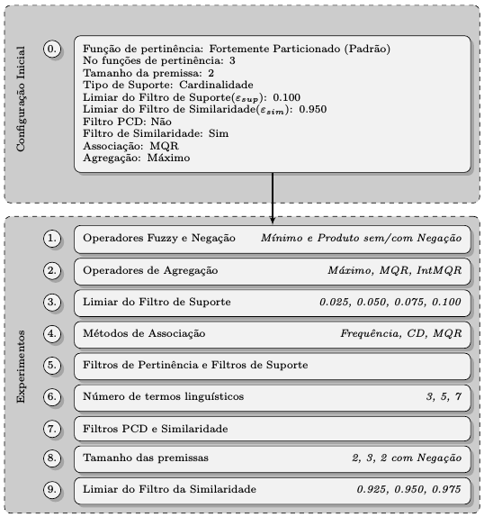
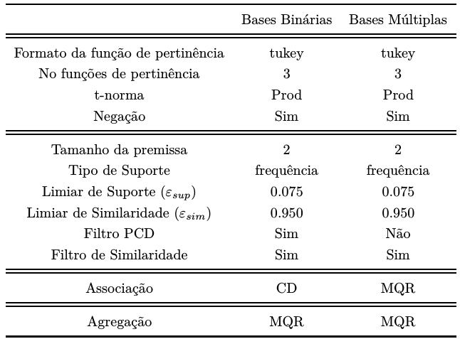
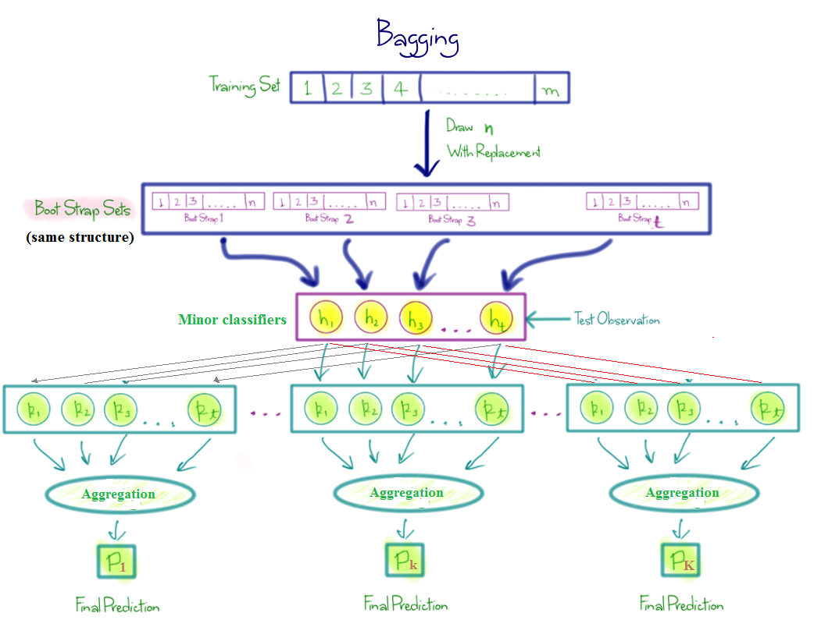
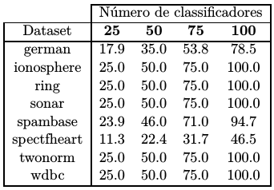
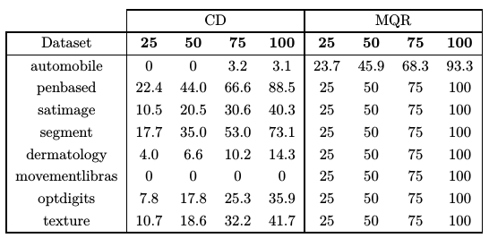

Procura-se uma configuração competitiva para o modelo AutoFIS-Class,
visando a futura comparação com os demais modelos (SFE).
É um experimento sequencial

Configurações achadas
As configurações referenciais encontradas para os tipos de bases de dados são:

Por causa do custo computacional ao acrescentar o número de atributos nas bases de dados.
Torna-se o algoritmo proposto não ideal. O espirito do algoritmo e além de ser determinístico que execute em um tempo razoavel.
Por isso, e proposta a seguinte extensao do AutoFI-Class.

Em bases binárias

Em bases de múltiplas classes
